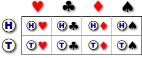
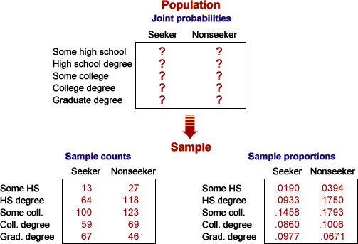

Joint probabilities
To model bivariate categorical data, we assume an underlying population of pairs of categorical values. The data are treated as a random sample of pairs of values from this population. A real finite population occasionally underlies the data, but we must usually hypothesise an infinite underlying population.
The proportion of times that the pair of categorical values (x, y) occurs in the population — its probability — is denoted by pxy. The probabilities pxy are called the joint probabilities for the two variables.
Gambling simulation
A gambler draws a card from a shuffled deck and also tosses a coin, resulting in a pair of categorical values,
| Variable | Possible values |
|---|---|
| Coin side, X | Head or Tail |
| Card suit, Y | Heart, Club, Diamond or Spade |
Each of the eight possible combinations of coin side and card suit is equally likely and would occur in the same proportions in the underlying population.

The probabilities for all pairs are therefore the same,
phead, heart = phead, club = ... = ptail, spade = 1/8 = 0.125
These joint probabilities are shown in blue in the table below.
The two lower tables (in black) describe 100 pairs of values sampled from this population — 100 coin-card pairs. The first of these tables shows the sample as a contingency table of counts; the other table displays the counts as proportions.
Click Take sample a few times to see the variability in samples of 100 coin-card pairs. Increase the sample size to 500 and repeat. Observe that the sample proportions are less variable when the sample size is large.
Interest in the model
We are usually interested in the joint probabilities in the underlying model, rather than the corresponding proportions from the sample data that have been collected (the contingency table). However the joint probabilities are unknown parameters in most practical situations and must be estimated from the sample data.
Requests for promotional material by travelers
In situations of practical importance, the underlying probabilities are unknown. In the data set that was collected to examine which travelers request promotional material, the 686 travelers in the study were not the focus of attention — the researcher wanted to generalise to all other similar travelers.

The population proportions are unknown, but the sample proportions provide estimates of them.